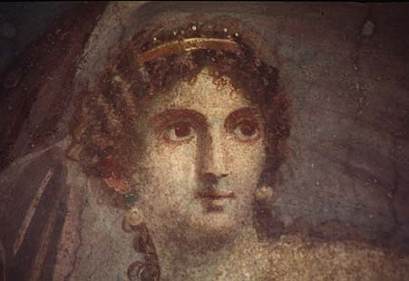
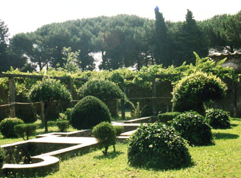
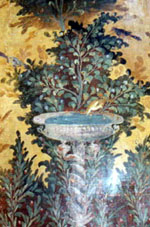

LATIN TEXT of De Rerum Natura
ENGLISH TRANSLATION by William Ellery Leonard
OUTLINE of DRN
BIOGRAPHY of Lucretius and basic information about his work
BIOGRAPHY of Epicurus
EPICURUS and Epicurean Philosophy
HISTORICAL BACKGROUND and study questions for DRN
The ATOMIC THEORY of Lucretius as it relates to modern scientific theory
STUDY GUIDE to De Rerum Natura from Brooklyn College
ESSAY by Pat Duffy Hutcheon
EPICUREANISM AND ARCHAEOLOGY
Information about and excellent images of the papyrus scrolls of the Epicurean philosopher Philodemus which were found at Herculaneum.
Information about and excellent images of the inscription on Epicurus in Oenoanda (Turkey).
LUCRETIAN AND EPICUREAN GEMS
Thomas Jefferson on Epicureanism
Tennyson's Lucretius
A Sixteenth Century edition of DRN
An INTERPRETATION of DRN by Gary Sloan
Browse the Philosophy Garden for more information and images.


Last updated 11/26/01
Alison W. Barker